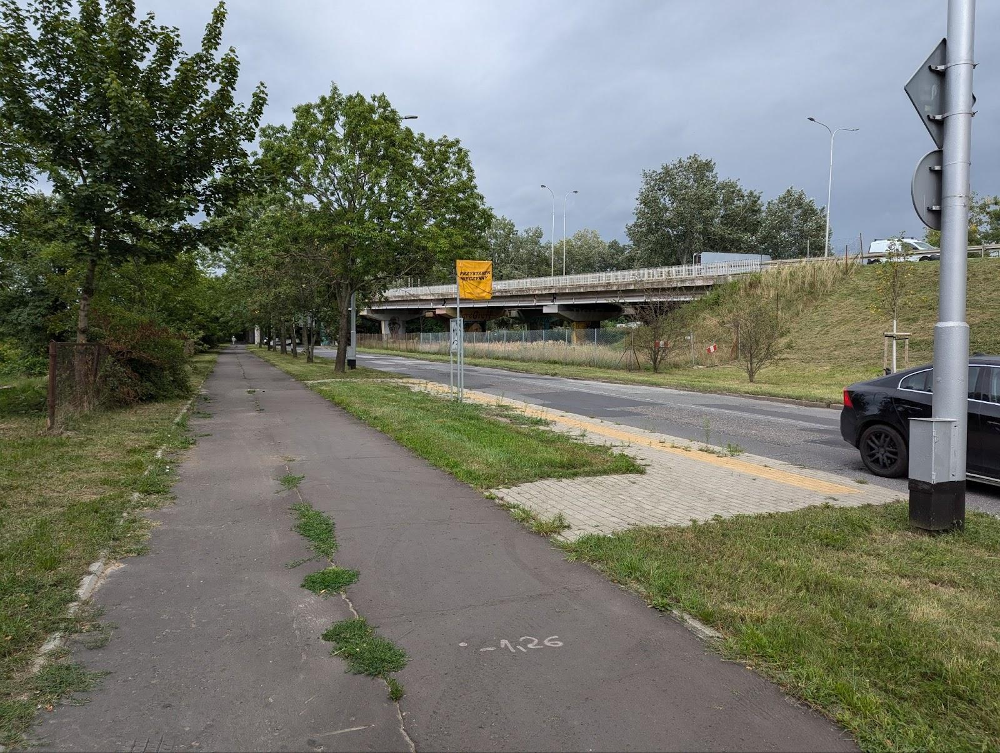
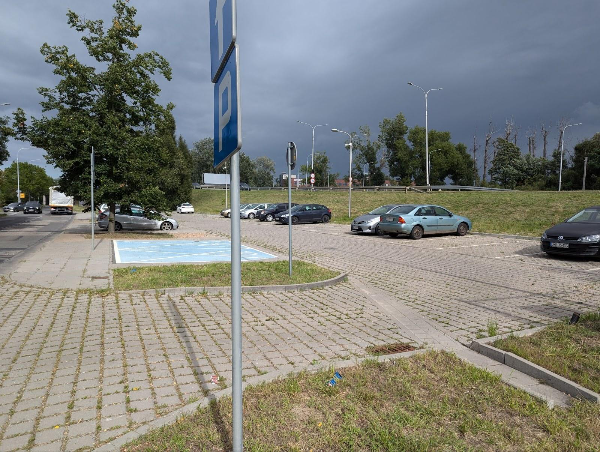
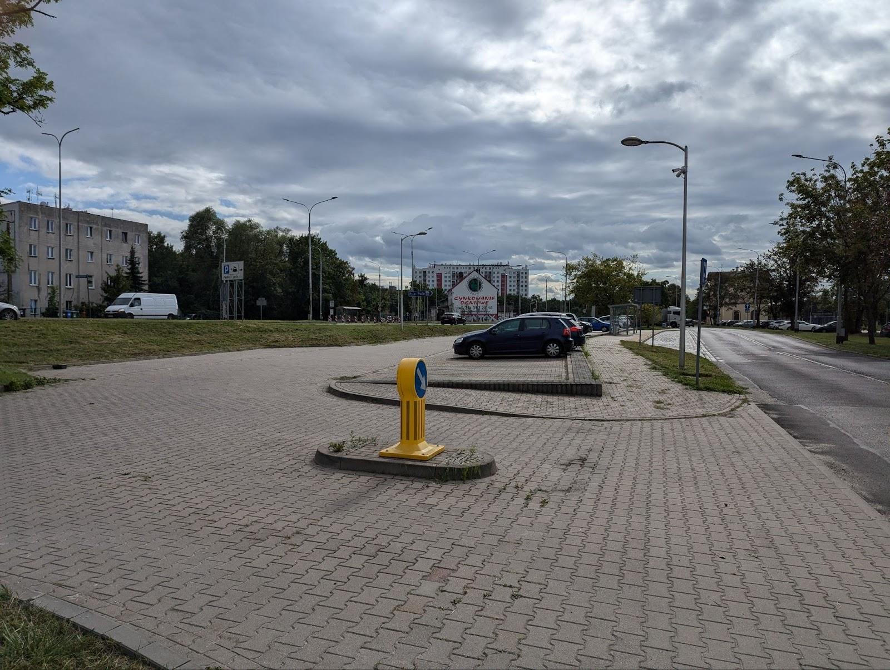
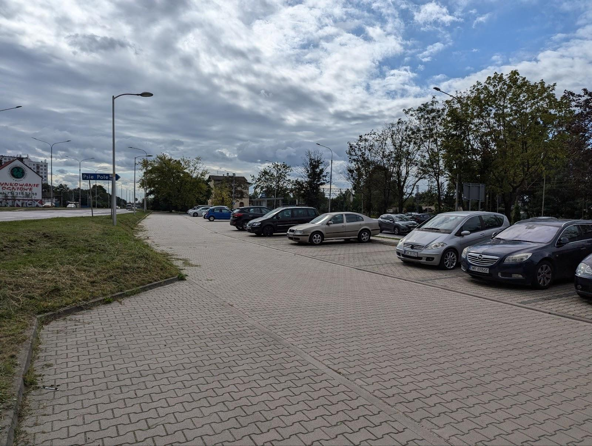
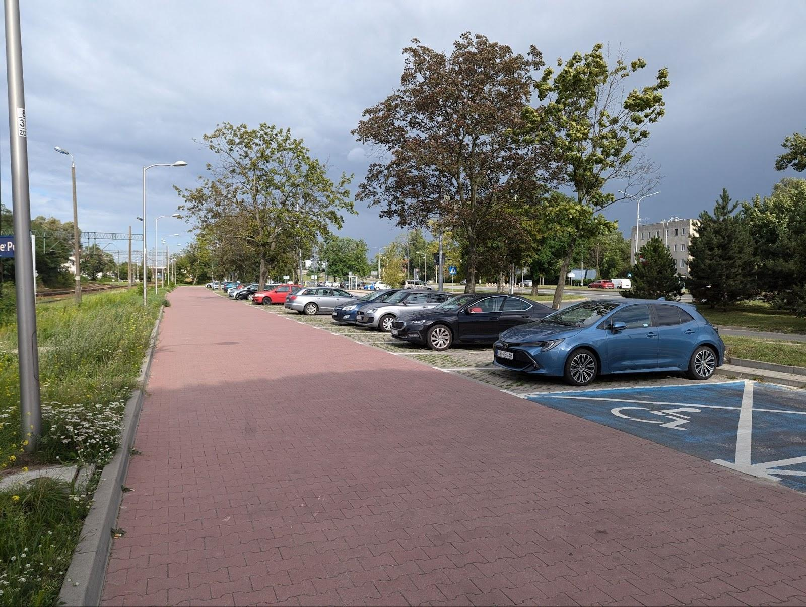
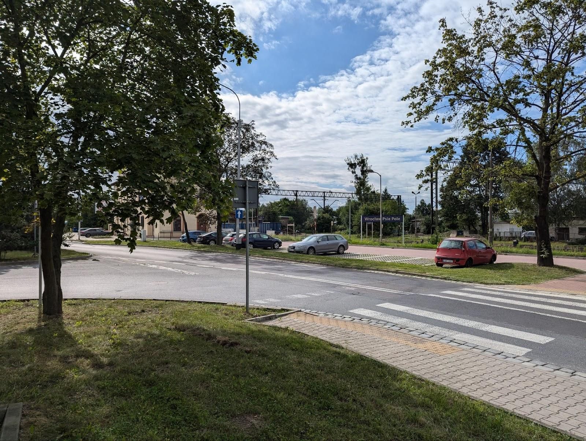
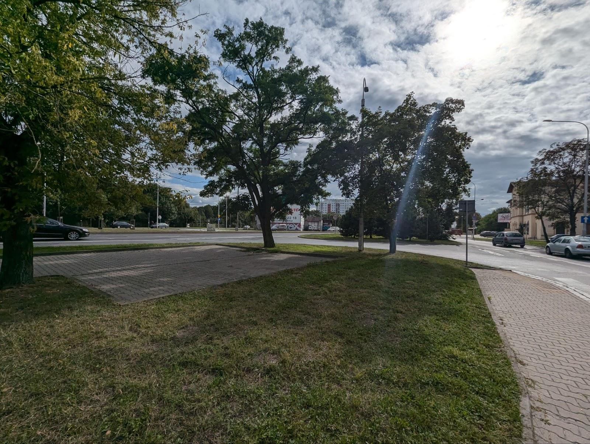
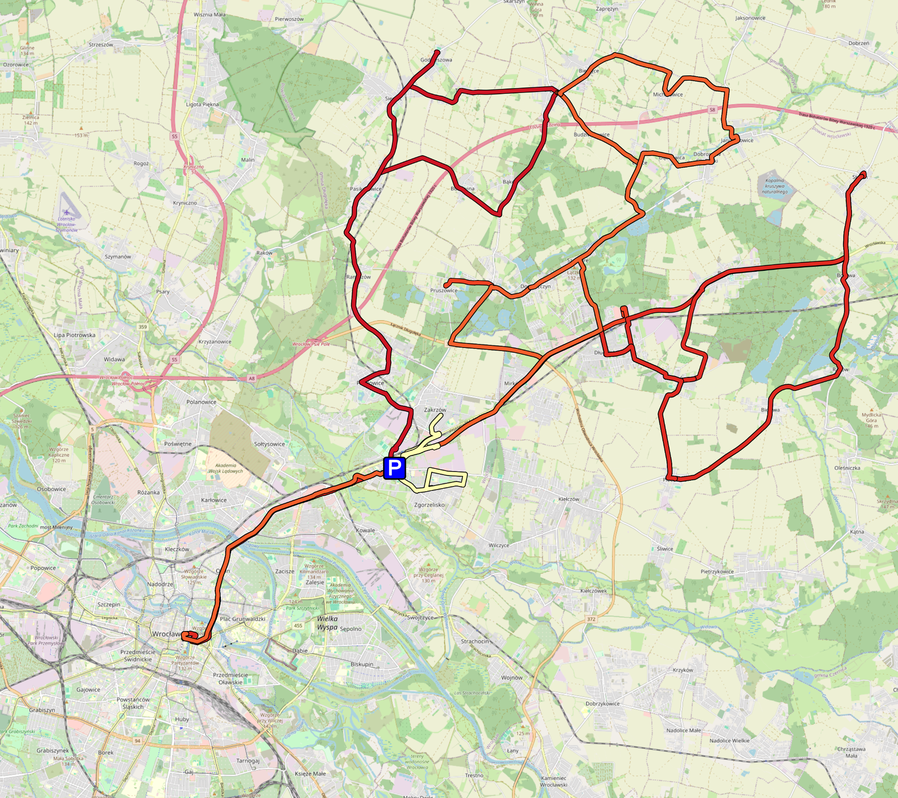

Treść
1. Wrocław Psie Pole¶
P&R Wrocław Psie Pole jest zbiorem 4 parkingów w różnych miejscach w pobliżu stacji. Trzy z nich znajdują się wzdłuż torów kolejowych przy ulicy Dobroszyckiej – łącznika pomiędzy ulicą Bierutowską, a al. Jana III Sobieskiego. Każdy z obiektów ma średnio ok. 30 miejsc parkingowych i są utrzymane w podobnym standardzie. Podczas mojej wizyty zaobserwowałem kolejne potoki samochodów wyjeżdżających z parkingu wraz z każdym przyjazdem pociągu. Ze względu na konstrukcję parkingów odległość do peronów może być bardzo różna – od ok. 70m do prawie 300m. Przejście na peron wyspowy (2) jest realizowane wyłącznie w postaci dwóch przejść w poziomie szyn na wschodnim i zachodnim końcu peronu 1. Potencjalnie niebezpieczne sytuacje może powodować prowadzenie chodników i ścieżki rowerowej z ulicy Dobroszyckiej i innych parkingów przez drogę dojazdową jednego z parkingów (zdjęcia 8-11). Brak tutaj jakiegokolwiek miejsca do parkowania rowerów. Dojście do jednego z obiektów jest przejściem podziemnym pod al. Jana III Sobieskiego (na razie brak zdjęcia). Parking głównie obsługuje dojeżdżających ze wschodniej aglomeracji wrocławskiej – gminy Długołęka ze względu na świetne położenie przy głównej drodze wlotowej do miasta. Skorzystać mogą też mieszkańcy pobliskiego Zakrzowa docierając tu ul. Danuty Siedzikówny (raczej wąska i bez chodnika). Utrudniony jest natomiast dojazd z osiedla na południe od drogi i kolei – Psiego Pola. Ze względu na niefortunny układ drogowy i ograniczoną przepustowość ul. Bierutowskiej, próby dojazdu w godzinach szczytu mogą skończyć się na długim korku na skrzyżowaniu Bierutowska-Dobroszycka – jedynej możliwości skorzystania z P&R. Przez większą część dnia parkingi są pełne, niektórzy parkują nawet na chodniku przy Bierutowskiej 38 i tuż pod dworcem.
Linia kolejowa 143 na której leży stacja od lat czeka na modernizację, podniesienie prędkości i na ewentualne poszerzenie do 3-4 torów szlakowych. Perony są niskie, występują długie odcinki z ograniczeniami prędkości oraz częstym zjawiskiem są opóźnienia na wjeździe do Wrocławia Głównego. Biorąc pod uwagę całkowity czas parkowania i czekania na pociąg, dla typowego wrocławskiego kierowcy jest to czas dłuższy niż w przypadku przebycia całej podróży samochodem. Pomimo wszystkich tych mankamentów, P&R cieszy się sporą popularnością i często trudno tu spotkać wolne miejsce parkingowe.
Jeden z parkingów kosztował ok. 850 tys. zł, co daje koszt za miejsce na poziomie 22 tys. zł.















Połączenia:
1. Pociągi
a. Wrocław Główny – 43 pociągi (KD i PR): 4:20-23:00, brak taktu, czas oczekiwania 6-78 minut, czas przejazdu 20 minut.
Inne regionalne: Trzebnica, Świdnica, Sobótka, Ostrów Wielkopolski, Namysłów, Milicz, Oleśnica, Krotoszyn, Kluczbork
2. Autobusy:
a. Linia 150 w relacji Osiedle Sobieskiego – Litewska (przez rondo Lotników Polskich – Poleska – Kiełczowska)
05:40-22:00, 1-2 wyjazdy w godzinie, losowe godziny odjazdu i brak taktu, czas oczekiwania na kurs 20-55 minut. Linia kursuje tylko w dni robocze.
b. Linia 904 w relacji Łozina – Galeria Dominikańska (przez Dąbrowica – Szczodre – Domaszczyn – Mirków – Psie Pole – Kowale – Karłowice – Różankę – Ołbin)
04:40-23:50, 0-1 wyjazdów w godzinie +1 kurs o 7:51, czas oczekiwania na kurs 30-150 minut. Czas przejazdu 25-28 minut.
c. Linia 914 w relacji Długołęka – Galeria Dominikańska (przez Mirków – Psie Pole – Kowale – Karłowice – Różankę – Ołbin)
05:15-21:25, 0-1 odjazdów w godzinie, czas oczekiwania na kurs 60-120 minut. Czas przejazdu 25-28 minut.
d. Linia 924 w relacji Stępin – Galeria Dominikańska (przez Borowa – Byków – Długołęka – Mirków – Psie Pole – Kowale – Karłowice – Różankę – Ołbin)
05:35-23:15, 0-1 odjazdów w godzinie +2 kursy, czas oczekiwania na kurs 40-120 minut. Linia kursuje tylko w dni robocze. Czas przejazdu 25-28 minut.
e. Linia 936 w relacji Godzieszowa – Mirków (przez Łozina – Bąków – Bukowina – Pasikurowice – Ramiszów – Pawłowice – Psie Pole – Mirków – Stary Mirków)
07:16-17:50, odjazdy co 1-4 godziny, czas oczekiwania na kurs 50-230 minut. Linia kursuje tylko w dni robocze.
Linie 904, 914 i 924 pokrywają się trasami ze sobą i linią kolejową na odcinku (pod)miejskim. Razem na trasie z Psiego Pola do Galerii Dominikańskiej oferują takt 15-30 minut w zależności od szczytu.
Na podobnej trasie kursuje prywatny przewoźnik Beskid.
P&R obsługują przystanki PSIE POLE (Stacja kolejowa) w odległości od 130 do 170 metrów korzystając z przejścia podziemnego (2-4 minut).
3. Rower miejski – 35 minut do Galerii Dominikańskiej, stacja znajduje się tuż obok budynku dworca.